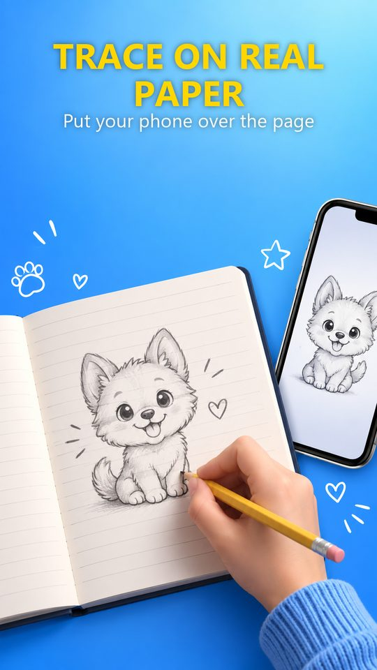

Trace drawings onto real paper with your phone
Point your camera at a sheet of paper. The app holds any photo or template on the page while you draw it by hand, with a real pencil.
Get it free on Google Play Free · Android 7.0 and up · no account needed